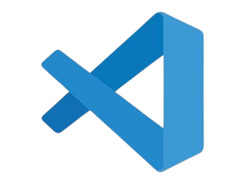
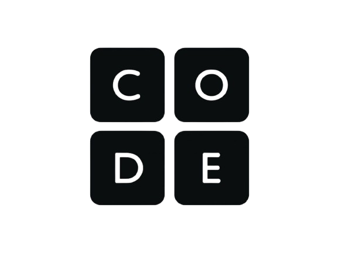
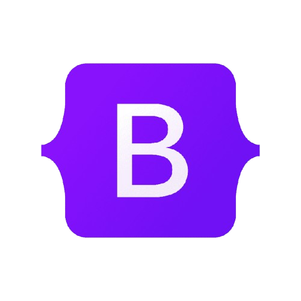

Editores
Los editores mas conocidos en el mundo de la programación son los siguentes.
VS Code
Visual Studio Code (VS Code) es un editor de código fuente desarrollado por Microsoft, diseñado para ser ligero, rápido y altamente personalizable. A diferencia de otros editores de código, como los IDE completos (Entornos de Desarrollo Integrados), VS Code se enfoca en ofrecer una experiencia ágil para la escritura y edición de código, sin sacrificar características avanzadas. Lo que lo diferencia es su capacidad de ser extendido con una gran cantidad de extensiones y herramientas, adaptándose a las necesidades específicas de cada desarrollador. Entre sus características clave, se incluyen la autocompletado inteligente mediante IntelliSense, la depuración integrada, y el control de versiones con Git, lo que convierte a VS Code en una opción versátil tanto para desarrolladores individuales como para equipos.
 Ver masSublime Text
Una de las aplicaciones más populares para editar código. Destaca tanto por tener una interfaz bonita y efectiva como por tener una gran cantidad de opciones para todos los usuarios. Encuentras opciones como un modo de escritura sin distracciones, edición dividida y opciones de búsqueda. También tiene un sistema de plug-ins para mejorar sus funcionalidades. Sublime Text también destaca por tener una gran cantidad de atajos de teclado, lo que te permite realizar de forma muy rápida algunas acciones sin tener que estar haciendo click aquí o allí. Su gran pega es que no es gratuito, y su licencia tiene un coste de 99 dólares.
 Ver mas
Ver mas
Recursos
Aquí encontraras recursos de aprendizaje y ayuda para programar
Curso de code.org
Code.org es una plataforma educativa en línea que ofrece cursos gratuitos para aprender a programar en diferentes lenguajes de programación. La plataforma cuenta con una amplia variedad de recursos en español, lo que la convierte en una excelente opción para aquellos que deseen iniciarse en el mundo de la programación
 Ver masCodecademy
Codecademy es una de las plataformas de aprendizaje de programación más conocidas y completas. Ofrece cursos gratuitos en diversos lenguajes, como HTML, CSS, Python, JavaScript y más. Aunque también tiene una versión de pago, la versión gratuita es suficiente para comenzar. En Codecademy puedes avanzar a tu propio ritmo y realizar ejercicios prácticos que te permitirán aplicar lo que vas aprendiendo.
Ver masHerramientas
Aquí encontraras repositorios y librerias con los cuales podras subir y guardar tus futuros proyectos
GitHub
GitHub es una plataforma en la que puedes almacenar y compartir tus proyectos de código abierto. Puedes crear repositorios para tu trabajo en equipo, almacenar y versionar tus fuentes de código, y crear contribuciones a otros proyectos. GitHub también proporciona herramientas para administrar y colaborar en proyectos, como las solicitudes de cambios y el flujo de trabajo enriquecido.
Bootstrap
ootstrap es una biblioteca de herramientas de código abierto optimizadas para el diseño de sitios y aplicaciones web. Esta plataforma se basa en lenguaje HTML y CSS, e incluye una amplia gama de elementos de diseño, como formularios, botones y menús que se adaptan a diferentes formatos de navegación.
 Ver mas